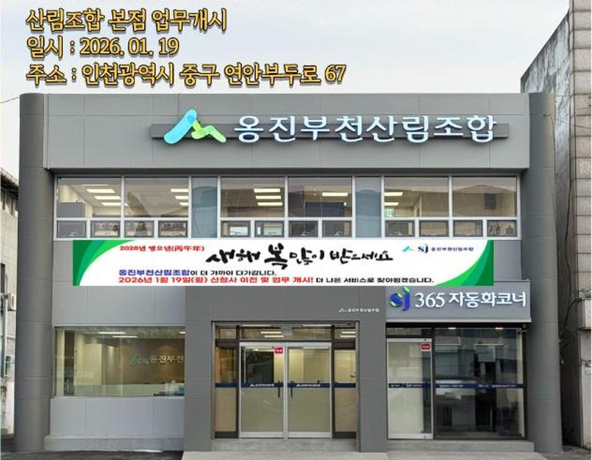
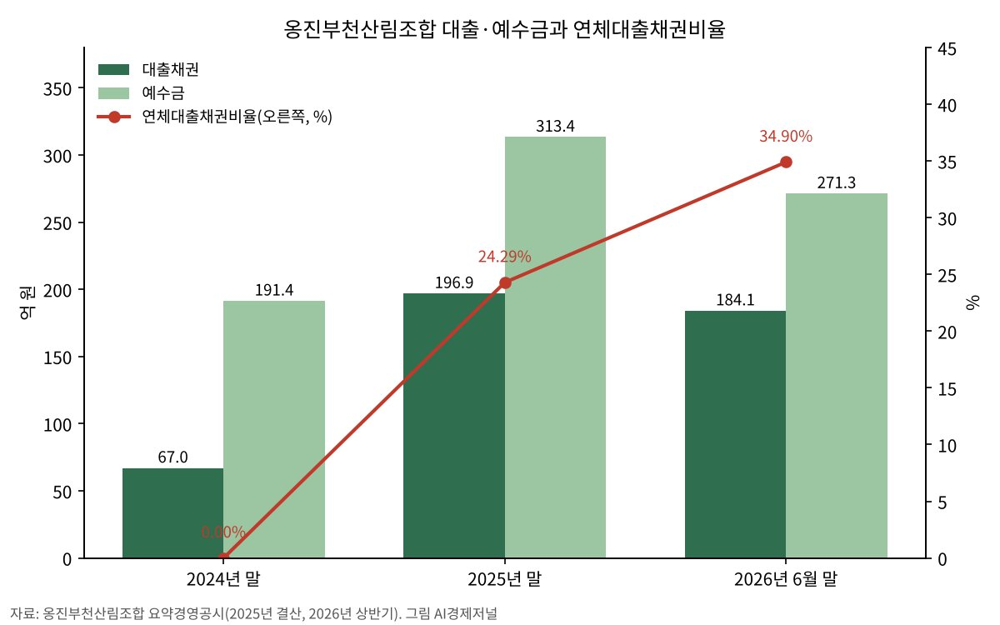

옹진부천산림조합, 허위 분양계약서에 37억 대출사고…경영개선권고까지
사고 금액은 자기자본 28억 원의 1.3배…한 해 새 대출 세 배로 늘린 뒤 연체율 34.9%
조합은 담보 경매로 회수 중, 산림조합 상호금융은 상반기 370억 원 적자
AI경제저널=김갑봉 기자 | 인천 옹진군과 경기 부천시를 구역으로 둔 옹진부천산림조합에서 37억 원대 대출 사고가 났다. 채무자가 허위 분양계약서를 내 대출금을 부풀려 받았다. 조합은 이와 별도로 지난 8월 적기시정조치 가운데 첫 단계인 경영개선권고를 받았다.

허위 분양계약서로 받은 대출 37억8245만 원
조합이 9월 21일 낸 경영(수시) 공시를 보면 금융사고 금액은 37억8245만1531원이다. 사고가 난 날은 2024년 12월 24일, 조합이 사고를 안 날은 올해 6월 4일이다. 1년 5개월 넘게 사고를 몰랐다.
공시는 경위를 「채무자가 기망하여 과도한 대출금 지급처리」로, 원인을 「허위분양계약서 제출」로 적었다. 공시 사유는 자기자본의 100분의 5(1억 원 초과)에 해당하는 손실이다. 조합은 경매 뒤 배당금을 받아 대출금을 회수하고 있다고 밝혔다.
조합은 이튿날 누리집에 이 공시를 「8월 경영(수시) 정정 공시」로 올렸다. 시사저널은 9월 21일 정정 전 공시를 근거로 손실 금액을 34억4617만 원으로 보도했다. 정정 공시 금액은 이보다 3억3628만 원 많다.
시사저널 보도를 보면 준조합원 A씨 등 5명이 2024년 12월 24일부터 지난해 3월 11일까지 여섯 차례 부동산 담보대출을 받았다. 담보는 인천 계양구와 경기 화성·평택 일대 상가다. 5억 원짜리 상가를 10억 원에 산 것처럼 꾸민 계약서를 냈다.
조합은 6월 4일 서울경찰청 광역범죄수사대에서 A씨 등의 사기 혐의 수사를 통보받고서야 사고를 알았다. 조합은 내부 직원이 공모하거나 개입한 정황은 확인되지 않았다고 시사저널에 밝혔다.
8월에는 경영개선권고 처분
조합은 8월 26일 낸 공시에서 「산림조합의 구조개선에 관한 법률」 제4조에 따른 적기시정조치 처분을 받았다고 알렸다. 2025년 말 경영상태평가 결과 경영개선권고 조합으로 정해졌고, 상호금융예금자보호기금관리위원회 심의를 거쳤다.
이 법은 시·도지사가 기금관리위원회 심의를 거쳐 부실조합이나 부실우려조합에 조치를 권고·요구·명령하도록 한다. 조치에는 임직원 주의·경고부터 자기자본 증대, 점포·조직 축소, 고금리 수신 제한, 합병, 계약이전까지 들어 있다.
같은 법 시행규칙은 순자본비율이 2% 아래이거나 경영상태 평가가 4등급 이하인 조합을 부실우려조합으로 본다. 자본적정성이나 자산건전성 부문이 4등급 이하여도 같다. 조합은 공시에서 이행계획을 세워 수지 개선에 보탬이 될 것으로 내다봤다.
한 해 새 대출을 세 배로 늘렸다
조합의 요약경영공시를 보면 대출채권은 2024년 말 66억9600만 원에서 2025년 말 196억9400만 원으로 194% 늘었다. 같은 기간 예수금은 191억4400만 원에서 313억4100만 원으로 64% 불었다. 예금을 끌어모아 대출을 크게 늘린 셈이다.
사고 대출이 나간 때가 바로 이 무렵이다. 사고 금액 37억8245만 원은 지난해 늘어난 대출 130억 원의 29%에 해당한다(AI경제저널 계산).

건전성 지표는 빠르게 나빠졌다. 연체대출채권비율은 2024년 말 0%에서 2025년 말 24.29%, 올해 6월 말 34.90%가 됐다. 순고정이하여신비율은 2025년 말 14.74%에서 올해 6월 말 28.32%로 뛰었다. 대출금의 3분의 1 남짓이 연체 중이다.
손실도 커졌다. 당기순손실은 2024년 8억3800만 원, 2025년 18억6800만 원이었고, 올해 상반기에만 10억3900만 원이다. 자본총계는 2025년 말 38억5700만 원에서 올해 6월 말 28억2800만 원으로 27% 줄었다.
조합은 상반기 경영공시에 경영실태평가 등급을 2025년 12월 3등급, 올해 6월 4등급으로 적었다. 6월에는 1억9122만 원, 9월에는 2억1183만 원의 부실대출이 생겼다는 수시 공시도 냈다.
산림조합 상호금융 전체가 흔들린다
옹진부천만의 일이 아니다. 송옥주 국회의원(농림축산식품해양수산위원회)이 받은 국정감사 자료를 보면 산림조합 상호금융은 올해 상반기 370억 원 순손실을 냈다. 2022년에는 916억 원 흑자였다.
6월 말 산림조합의 고정이하여신비율은 8.78%로 상호금융 다섯 업권 가운데 가장 높다. 공동대출 연체율은 17.87%, 연체율 10%를 넘는 산림조합은 지난해 말 17곳에서 21곳으로 늘었다.
37억 대출사고가 인천 경제에 말하는 것
첫째, 예금자다. 조합 예수금은 지난해 말 313억 원에서 6월 말 271억 원으로 42억 원(13.4%) 빠졌다. 산림조합 예금은 1인당 원리금 1억 원까지 보호되고, 1억 원을 넘는 몫은 보호 밖이다. 예금이 줄어든 까닭은 공시에 없다.
예금이 빠지면 조합은 빌려준 돈을 회수하기 전에 내줄 돈부터 마련해야 한다. 석 달 안에 들어올 자산을 석 달 안에 갚을 부채로 나눈 유동성비율은 92.92%에서 59.68%로 떨어졌다. 석 달 안에 나갈 돈이 들어올 돈보다 많다는 뜻이다.
둘째, 조합원이다. 조합원 약 1300명이 낸 출자금은 13억3800만 원이다. 사고 금액은 6월 말 자본총계 28억2800만 원의 1.3배다(AI경제저널 계산). 경매 회수가 모자라면 손실은 결국 출자금과 적립금을 깎는다.
셋째, 지표 뒤에 숨은 것이다. 6월 말 순자본비율은 9.94%다. 부실우려조합 기준 2%보다 훨씬 높아 겉으로는 버틸 만해 보인다. 그러나 연체대출채권비율 34.90%가 보여 주듯 위험은 자본비율이 아니라 대출의 질에 쌓였다.
넷째, 본업과 거리다. 산림조합은 산주와 임업인을 위한 조합이다. 그러나 사고 대출의 담보는 조합 구역 밖 계양·화성·평택 상가였고, 빌린 사람은 준조합원이었다. 임업과 무관한 부동산 대출이 조합 자본을 갉아먹었다.
다섯째, 감독이다. 법은 적기시정조치를 시·도지사에게 맡겼다. 허위 계약서를 걸러내지 못해 1년 5개월 동안 사고를 몰랐다는 점에서, 대출 심사와 내부통제를 누가 어떻게 들여다볼지가 남은 숙제다.
회수와 이행계획이 다음 고비
조합은 담보 상가 경매로 대출금을 거둘 계획이다. 보도대로 허위 매입가 10억 원의 70%를 빌려줬다면 대출은 실제 매입가 5억 원보다 2억 원 많다(AI경제저널 계산). 경매 배당만으로 원금을 다 찾기는 쉽지 않다. 경영개선권고 이행계획의 구체적 내용은 공시에 없다.
본점은 1월 19일 인천 제물포구 연안부두로 67로 옮겼고, 2024년 1월에는 부천시청점을 열었다. 임직원은 6월 말 23명이다. 조합 문의는 본점(032-888-3101)이 받는다.
참고문헌
- 옹진부천산림조합(2026). 2026년 8월 경영(수시) 정정 공시(금융사고, 2026년 9월 21일자). 조합 누리집 경영공시, 2026년 9월 22일 게시. http://ongjinbsj.com/sub/sub05_03.html?ptype=view&idx=6103&page=1&code=disclosure
- 옹진부천산림조합(2026). 2026년 7월 경영(수시) 공시(적기시정조치, 2026년 8월 26일자). http://ongjinbsj.com/sub/sub05_03.html?ptype=view&idx=6100&page=1&code=disclosure
- 옹진부천산림조합(2026). 2026년 상반기 통일경영공시·요약경영공시(작성기준일 2026년 6월 30일). http://ongjinbsj.com/sub/sub05_03.html?ptype=view&idx=6095&page=1&code=disclosure
- 옹진부천산림조합(2026). 2025년 경영공시(12월말)·요약경영공시. 2026년 3월 16일 게시. http://ongjinbsj.com/sub/sub05_03.html?ptype=view&idx=6027&page=1&code=disclosure
- 옹진부천산림조합(2026). 2026년 5월 경영(수시) 공시(부실대출, 2026년 6월 22일자). http://ongjinbsj.com/sub/sub05_03.html?ptype=view&idx=6056&page=1&code=disclosure
- 산림조합의 구조개선에 관한 법률 제2조·제4조(법률 제21065호, 2026. 1. 2. 시행). 국가법령정보센터. https://www.law.go.kr/법령/산림조합의구조개선에관한법률
- 산림조합의 구조개선에 관한 법률 시행규칙 제3조·제4조(농림수산식품부령 제466호, 2021. 1. 1. 시행). 국가법령정보센터. https://www.law.go.kr/법령/산림조합의구조개선에관한법률시행규칙
- 디지털데일리(2026). 상호금융 339곳 연체율 두 자리…반년 새 66% 급증 [2026 국감]. 2026년 10월 12일. https://www.ddaily.co.kr/page/view/2026101209190545831
- 한국영농신문(2026). 산림조합 상호금융 141곳 중 90% 이상 적자…반기 순손실 370억원. 2026년 10월 21일. https://www.youngnong.co.kr/news/articleView.html?idxno=71264
- 시사저널(2026). [단독] 옹진부천산림조합 '34억' 금융사고 발생…1년 6개월만에 파악. 2026년 9월 21일. https://www.sisajournal.com/news/articleView.html?idxno=387935
[사진 출처]
- [사진1] 옹진부천산림조합 누리집(http://ongjinbsj.com) 첫 화면 알림창 갈무리, 2026.11.7. 보도 목적 인용 / [도표1] 옹진부천산림조합 요약경영공시(2025년 결산, 2026년 상반기) 수치로 AI경제저널 작성
관련기사
- 강화·옹진, 농어촌 기본소득 시범사업에 나란히 신청
- [금융시장 브리핑①] 삼성전자·SK하이닉스 단일종목 레버리지 출시 80일, 개인 손실 6조3130억원
- [경세제민] 공적자금 168조7000억원의 교훈, 첨단산업 지원과 금산분리의 경계
저작권자 © AI경제저널 무단전재 및 재배포, AI학습 및 활용 금지